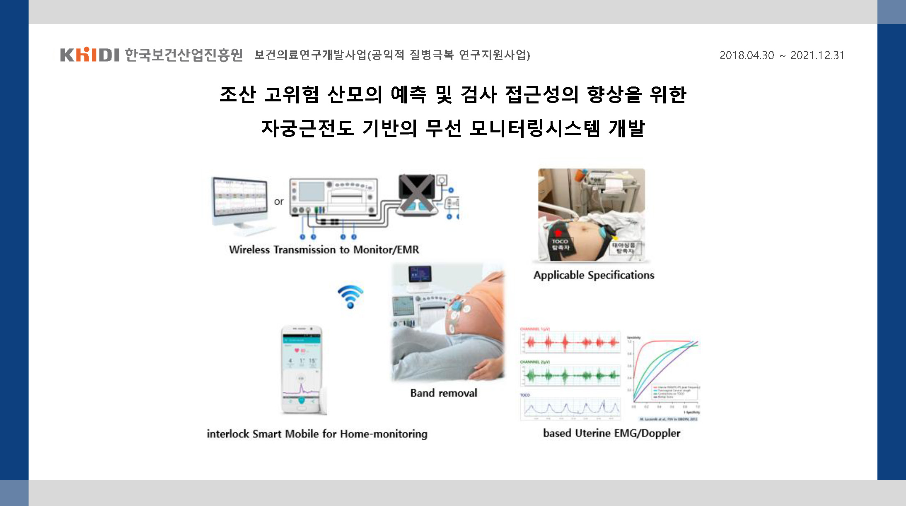

Research
- Clinical Study Design
- UX/UI Design & Usability
- Medical Industry Policy
- Bio Signal Processing & AI
Research - Clinical Study Design
- All
- Progressing
- Closed
인공지능 기반 중증악화 예측 가능한 고성능 환자감시장치 시스템 개발
고령자 만성질환, 현장형 진단 및 치료 시스템 임상시험 지원
디지털 치료기기 임상설계 가이드라인 개발 연구
조산 고위험 산모 예측 알고리즘 개발 및 자궁근전도 무선 모니터링 시스템의 임상적 유효성 검증
위암영상검출진단보조소프트웨어에 대한 임상시험계획서 개발
생체활성 소재 기반의 임상적 요구에 최적화된 기능성 환자 맞춤형 척추 유합 임플란트 및 제조 시스템 개발
첨단기술 기반 치료형 기기의 임상시험 프로토콜 가이드라인 개발